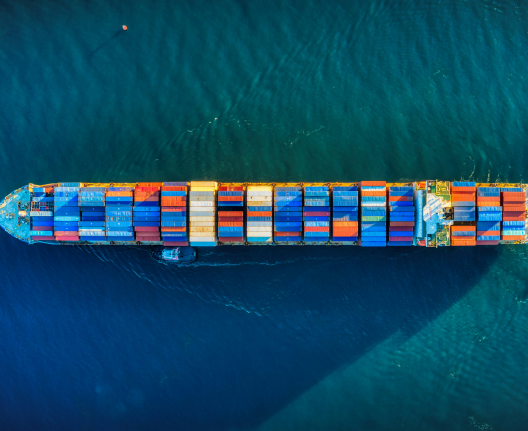
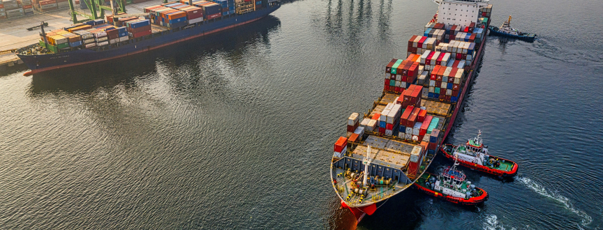

Exportação e Importação

A importação e exportação são elementos vitais do comércio internacional, impulsionando a economia global e promovendo a interconexão entre países. A exportação refere-se à venda de bens e serviços produzidos em um país para outros países. Esse processo é essencial para o crescimento econômico, permitindo que as empresas alcancem mercados externos e aumentem sua receita. Os produtos exportados podem variar desde commodities como petróleo, minerais e produtos agrícolas até produtos manufaturados e serviços especializados, como tecnologia e consultoria.
Os produtos importados podem incluir bens de consumo, matérias-primas, componentes eletrônicos e equipamentos industriais. O comércio internacional traz uma série de benefícios para os países participantes. Para os exportadores, ele oferece oportunidades de expansão de mercado, diversificação de clientes e aumento da competitividade. Para os importadores, proporciona acesso a produtos de alta qualidade, preços competitivos e tecnologias avançadas. Além disso, o comércio internacional promove a especialização produtiva, permitindo que os países se concentrem em áreas onde têm vantagens comparativas. No entanto, o comércio internacional também apresenta desafios, como a competição desigual entre países com diferentes níveis de desenvolvimento, o risco de dependência de importações e exportações específicas e a necessidade de garantir padrões de qualidade, segurança e sustentabilidade em toda a cadeia de suprimentos global.
 Sobre nós
Sobre nós Documentos
Documentos (11) 98954-2349
(11) 98954-2349 farmedcontato@gmail.com
farmedcontato@gmail.com